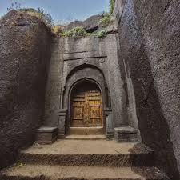
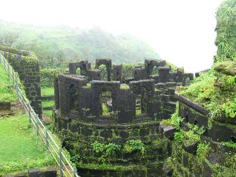

There is no need to get permission to visit Ratangad Fort.

Ratangad Fort Trek :
Basic Info About Location Ratangad Fort Trek:
Ratangad is situated in the Sahyadri mountains. Ratangad is a magnificent hill fort located near the village of Ratanwadi in Maharashtra, India's Ahmednagar district. Ratangad is around 400 years old; it served as a crucial defensive position for both Mughal and British times. Ratangad has become a popular trekking destination because of its beautiful atmosphere, important historical sites, and challenging tracks.
What Is the Best Time to Visit Ratangad Fort? You can visit anytime throughout the year, but considering the weather, October to March is the best time to go. However, the area has outstanding beauty during the monsoon season (June to September).
Locations to Visit in Ratangad Fort:
- Ganesh Darwaza: This temple is known as the main entrance of the fort.
- Kalyan Darwaza: Offering a glimpse into the region's rich past. Its imposing presence and intricate architecture evoke tales of valor and conquest.
- Nedhe (natural hole): Nedhe, or a naturally created hole in a rock, is one of nature's wonders. These holes are the result of wind-induced rock deterioration over millions of years. The size of these holes differs by area.
- The historic waterholes and caves.
Ratangad Fort Backpack:Things to Pack for Your Bag When Visiting Ratangad Fort:
- 2-3 Litres of water.
- Luggage packed in a good rucksack, all luggage wrapped properly.
- Rain Poncho (Rainy Season) / Hoodies / Jacket / Winchester for winter and summer season.
- Wear comfortable clothes during trek; avoid half sleeves shirts & lowers. Keep an extra pair of clothes.
- Sun cap and sunscreen.
- Dry snacks / Protein Bar / Electral – energizer drink.
- Personal first aid and personal medicine if any.
- Torch with extra batteries.
- Trekking shoes with a good grip & socks.
- Toiletries (Napkin, Facewash, Tissue, Toilet paper, Sanitizer).
- Trekking Pole.
Nearby Places to Visit Ratangad:
Bhandardara Lake:
Bhandardara Lake, periodically known as Arthur Lake, is a man-made lake built on the Pravara River by the Wilson Dam. This scenic location is perfect for boating, having a picnic, or just taking in the view. Ratangad Fort is about 12 kilometers from the lake.
Wilson Dam:
One of Maharashtra's oldest dams, it was built in the early 1900s. From the dam, you may take in the surrounding area's natural beauty and discover its historical significance. The dam is roughly 12 kilometers from Ratangad Fort, situated next to Bhandardara Lake.
Sandhan Valley:
This valley is renowned for its peaceful surroundings and breathtaking natural beauty. It's an ideal location for hiking, camping, and birding. Ratangad Fort is approximately 2.9 kilometers from the valley.
Amruteshwar Temple:
Located on the way to Ratangad Fort, this 12th-century shrine honors Lord Shiva. The peaceful atmosphere and detailed carvings of the shrine are well known. The temple is located in Ratanwadi village.
Kalsubai Peak:
Kalsubai Peak is known as the highest peak in Maharashtra, and the hike is difficult, but the rewards at the summit are worth it. Ratangad Fort is located 11.27 kilometers from Kalsubai Peak.
Randha Falls:
situated on the Rajur-Bhandardara Road, this waterfall is a hidden gem. It's a beautiful place to chill and take in the sounds of nature.
- Ratangad Fort Region: Ratangadh is located in the Western Ghats, Maharashtra. Altitude above sea level: around 4,250 feet
- Altitude above sea level: around 4,250 feet
- Trekking length: Around 4 - 5 kilometers (one way)
- Trek Time: 3 to 4 hours (one way)
- Level of difficulty: medium
- Ratangad Fort Base Village:: Ratanwadi Village / Samrad Village.
- Ratangad Fort Distance from Pune: 176 kilometers
Ratangad Fort's historical importance:
Ratangad Fort has a history of transiting for several centuries. Although Ratangad's origins are unexplored, it is believed to have been constructed during the Maratha empire. It is also believed that it was constructed in the 12th century by the Yadava dynasty, which governed the area and is credited with building it originally.
Like many other forts in Maharashtra, Ratangad was strategically placed to defend itself on a hilltop in the Sahyadri mountain range. This fort was used to control and keep an eye on activity inside the area and manage important trade routes.
Ratangad was owned by a string of Maratha rulers throughout history. This fort had strategic importance under Chhatrapati Shivaji Maharaj's rule. To protect his kingdom from intruders, Shivaji Maharaj charged and sustained various forts in the Sahyadri range, notably Ratangad.
By considering these things, it's clear that Ratangad Fort serves as both a reminder of the area's rich military, cultural, and architectural history and a tribute to its turbulent past. and it continues to attract tourists today due to its scenic beauty and historical significance.


How to Reach Ratangad Fort:
From Pune (180 km):
a) Private transport: Travellers can embark on a picturesque journey starting from Pune and heading towards the Pune-Nashik Highway. Upon reaching Sangamner, take a left turn and continue driving straight until arriving at the captivating Randha Waterfall. From there, make a U-turn and proceed along the route until reaching the serene village of Ratanwadi. This route offers travellers a scenic drive through winding roads, with the highlight being the majestic Randha Waterfall, before finally reaching the starting point for the trek to Ratangad Fort.
b) Public Transport: For travelers starting from Pune, the journey to Ratangad Fort begins by boarding a Nashik-bound bus from Shivajinagar. Upon reaching Sangamner, alight from the bus and avail of the local jeep services to continue onward to Ratanwadi village. These jeeps provide a convenient mode of transportation for reaching the base village of Ratangad Fort, ensuring a seamless transition from the bus journey to the trekking adventure that lies ahead.
From Mumbai (220 kilometres):
a) Private transport: To reach the base village of Ratangad Fort, Ratanwadi Village, travelers can follow the Mumbai-Nashik Highway. Upon reaching Ghoti, take a right turn and continue driving until reaching Ratanwadi. This route provides a straightforward path to the starting point for exploring Ratangad Fort, ensuring a smooth journey for adventurers eager to embark on their trekking expedition.
b) Public Transport: Travelers can begin their journey to Ratangad Fort by taking a local train from Chhatrapati Shivaji Maharaj Terminus (CSMT) to Kasara. Upon arrival at Kasara, local jeeps are available to transport visitors to Ratangad Fort. This convenient mode of transportation ensures a seamless transition from the train journey to the adventure awaiting at Ratangad Fort.
Nearest Airport: Pune Airport or Chhatrapati Shivaji Maharaj International Airport in Mumbai.
Nearest Railwaystation: Kasara Railwaystation or Igatpuri Railway Station.
Most Frequent Questions
Do I need permission for the Ratangad Trek?
Is camping allowed during the Ratangad Trek?
Yes, camping is allowed. It offers a memorable experience of spending a night amidst nature, with multiple camping areas close to the fort.
Are water resources available on the Ratangad trek route?
Yes, water is available for purchase at local shops in the base village or along the trek route.
Is a food facility available on the Ratangad Trek?
Yes, local food is available at the base village.
How difficult is the Ratangad Trek?
The Ratangad Trek is of medium difficulty.
What are the chances of encountering wild animals?
Encounters with wild animals are rare, but trekkers should stay cautious of snakes.
How much is the Ratangad trek entry fee?
The entry fee for the Ratangad trek is ₹30 per person.
Where is Ratangad located?
Ratangad is in the Ahmednagar district of Maharashtra, near the village of Ratanwadi.
Is it possible to trek Ratangad solo?
Yes, solo trekking is possible, but it is safer and more enjoyable in groups.
Which is the best season for the Ratangad trek?
The ideal trekking season is post-monsoon, from September to February.
What is the highest point of Ratangad?
Ratangad Fort is approximately 4,255 feet (1,297 meters) above sea level.
Is night trekking to Ratangad possible?
Yes, but it is advised to start early in the morning to avoid trekking in the dark.
Is there mobile network coverage at Ratangad?
Network coverage varies and may not be available in all areas.
Are there ATMs available at Ratangad?
No, there are no ATMs available.
Are washroom facilities available at Ratangad?
Basic washroom facilities are available at the base village.
Is parking available at Ratangad base?
Yes, parking is available at Ratanwadi, the base village of the Ratangad trek.